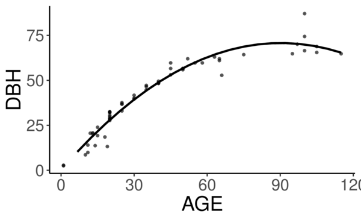
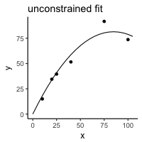

Constrained regression for better tree growth equations
2018-03-08
Say you plant a tree in a city. How big will it be in 20 years? You might want to know because the ecosystem services provided by trees is largely a function of their size - the amount of carbon stored in their wood, the amount of shade and evapotranspiration providing cooling, the amount of leaf area reducing sound and air pollution.
The Forest Service's urban tree database and allometric equations provides equations to predict how tree size changes with age for the purpose of quantifying ecosystem services. These equations are empirical, that is to say, the researchers tested a bunch of equations of different forms (linear, quadratic, cubic, log-log, …) and then selected the form that had the best fit (lowest AIC). What is nice about this method is that provides a good fit for the data. But they don't take into account knowledge we have about how trees grow, and they could end up making poor predictions on new observations, especially if extrapolated. Here's an illustration of that problem:
Below is the quadratic function to predict diameter at breast height (DBH) from age.
[ DBH = a(Age^2) + b(Age) + c + \epsilon ]
where ε is the error term.
See the best fitting quadratic relationship between age and DBH for Tilia americana below. This quadratic function does a good job describing how dbh changes with age (better than any other form they tested).

They found the quadratic curve gave the best fit, but unfortunately the curve predicts that DBH begins declining at old age, something we know isn't true. Diameter should increase monotonically with age. The trouble is that for old trees, the number of samples is small and the variance/error is large. A small random sample can cause the best fitting curve to be decreasing, when we know that if we had more data this wouldn't be the case. If we constrain the curve to be non decreasing over the range of the data, we can be almost certain to decrease the prediction error for new data.
How to do this?
We need the curve to be monotonically increasing over the range of our data. Or, put another way, we need the x-intercept of the line of symmetry of the quadratic function to be greater than the maximum value of our x data. The line of symmetry is (x = \frac{-b}{2a}). We need this to be greater than the maximum value of (x)
[ \frac{-b}{2a} > \max(x) ]
or equivalently
[ 2a\max(x) + b < 0 ]
The function lsei in the R package limSolve uses quadratic programming to find the solution that minimizes the sum of squared error subject to the constraint. I don't know the math behind this, but it is very neat. This stats.stackoverflow question and the limSolve vignette helped me figure this out.
Here is a toy example:
y <- c(15, 34.5, 39.6, 51.6, 91.7, 73.7)
x <- c(10L, 20L, 25L, 40L, 75L, 100L)
a <- data.frame(y = y, x = x)
m <- lm(y ~ x + I(x^2) - 1)
p <- data.frame(x = seq(0,105, 5))
p$y <- predict(m, p)
library(ggplot2)
theme_set(theme_classic(base_size = 12))
ggplot(a, aes(x = x, y = y)) +
geom_point() +
geom_line(data = p) +
ggtitle("unconstrained fit")

library(limSolve)
maxx <- max(x)
A <- matrix(ncol = 2, c(x, x^2))
B <- y
G <- matrix(nrow = 1, ncol = 2, byrow = T, data = c(1,2*maxx)) # here's the inequality constriant
H <- c(0)
constrained_model <- lsei(A = A,B = B, G = G, H = H, type = 2)
my_predict <- function(x,coefficients){
X <- cbind(x,x^2)
predictions <- X%*%coefficients
}
# compute predictions
xpred <- seq(0,105,5)
predictions_constrained <- my_predict(xpred,constrained_model$X)
df2 <- data.frame(xpred,predictions_constrained)
theme_set(theme_classic(base_size = 12))
ggplot(a, aes(x = x, y = y)) +
geom_point() +
geom_line(data = df2, aes(x = xpred, y = predictions_constrained)) +
ggtitle("constrained")

The constrained curve looks pretty good.
Just a quick note about using lsei, the signs are not what I expected them to be in the G matrix. Maybe my math is wrong somewhere or I don't fully understand the limSolve package. According to my equation above the G matrix should have negative values, but the solution is correct, so I'm going to go with that. If you read this and find my error, please tell me.
Even after constraining the quadratic curve to be increasing over the range of data, it's still not ideal. Extrapolation will certainly give bad predictions because the curve begins decreasing. The quadratic curve is nice because it is simple and easy and fits the data well, but it is probably better to select a model form that is grounded in the extensive knowledge we have of how trees grow. The goal of the urban tree database to create equations specific to urban trees which may have different growth parameters than trees found in forests. But the basic physiology governing tree growth is the same regardless of where the tree is growing, and it makes sense to use a model form that considers this physiology, like something from here.
Even if I won't use this, I'm happy to have learned how to perform a regression with a somewhat complex constraint on the parameters.